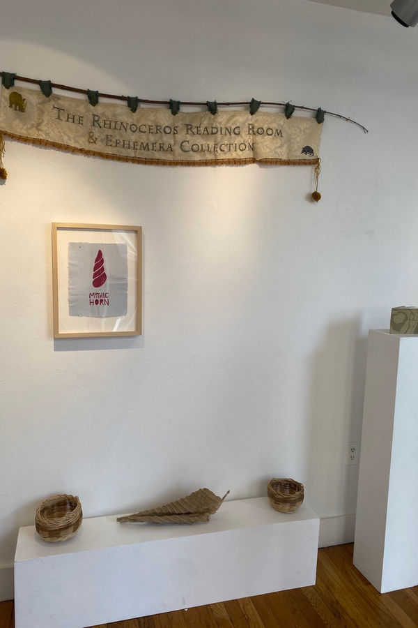

a leaf, a gourd, a shell...
Michelle Wilson & Anne Beck
February 2 - 18
Evening of Readings and Performance Tuesday February 6, 7-9 PM
Open First Friday February 2, 5-8PM & February 10, 11, 17, 18 from 12-5PM
Dream Farm Commons and the Rhinoceros Project present a leaf, a gourd, a shell... a reimagining of the Rhinoceros Reading Room & Ephemera Collection.
Held in conjunction with the CODEX International Book Art Fair & Symposium, this iteration of the Reading Room will present the work of a handful of the artists exhibiting at the fair, with an evening of readings and performance on the evening of February 6, from 7-9 PM.
The Rhinoceros Project is the socially engaged collaborative team of Anne Beck and Michelle Wilson, whose primary endeavors have been translating historically potent printed matter into large scale embroideries and watermarks in handmade paper, and making artists books to explain why they are doing such a thing. Likewise, their Reading Room and Ephemera Collection is an evolving collection of literature, research, found and created objects, and maps and diagrams that serves to anchor and communicate the vast web of topics that fuels their collaboration.
A leaf, a gourd, a shell... is borrowed from Ursula K. Le Guin's short essay "The Carrier Bag Theory of Fiction", wherein she builds on the hypothesis that the first cultural invention is the carrier bag, and expands that concept to include many such items until she arrives where she is headed: to the book. She writes: "A book holds words. Words hold things. They bear meanings. A novel (read: book) is a medicine bundle, holding things in a particular, powerful relation to one another and to us."
From its inception, the Rhinoceros Project has opened a portal, or a carrier bag, to explore environmental collapse, extinction, colonialism, material metaphor and histories, celestial navigation, myth, revitalization, craft, meditation, and expanding consciousness, among other narratives. The artists presenting on the evening of February 6th, from Northern California, Mexico, and beyond, have been invited to ruminate on where these tentacles are found in their work. Ephemera from their presentations will remain on display for the duration of the installation. Read more about the Rhinoceros Project here.
Evening of Readings and Performance - Tuesday February 6, 7-9 PM
The artists presenting on the evening of February 6 have been invited to ruminate on where these tentacles are found in their work and share their findings through reading and performance. Artists include Ioulia Akhmadeeva (Morelia, Michoacan), Antonio Guerra Gonzalez (Mexico City), Sarah Hulsey (Massachusetts), Gino Robair (Bay Area), Pokeweed Collective (Katherine Buckley, Gina Louise Fowler, Millicent Krebs, Irasema Quezada, and Jillian Sico - all from the MFA in Book Arts program at The University of Alabama) and The Printmakers Left, an elusive group from everywhere.
Schedule for the Evening:
7 pm doors
7 - 7:30 pm nourishing refreshments and food, Antonio Guerra Gonzalez performative printmaking, exhibition viewing
7:30 - 8:30 pm Program of readings and performance
8:30 - 9:00 Antonio Guerra Gonzalez performative printmaking, exhibition viewing and conversation
Exhibition continues with Weekend Sewing Circles
A leaf, a gourd, a shell will be open to the public on Saturday and Sunday, February 10, 11, and February 17, 18 from 12 - 5 pm. Drop by to view the exhibition, and contribute some stitches to the Rhinoceros Project's current work in progress - a large-scale embroidery of Tenochtitlan based on a 1524 map attributed to Albrecht Durer and Hernan Cortes.
